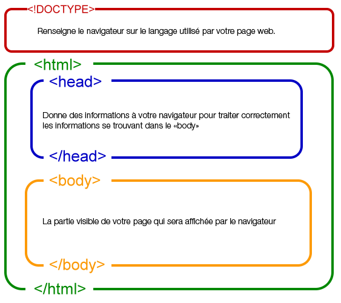
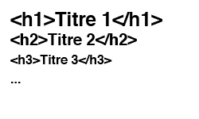
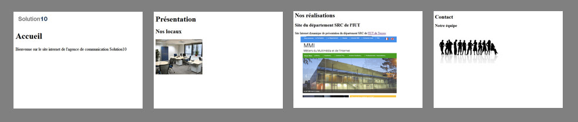
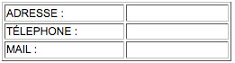
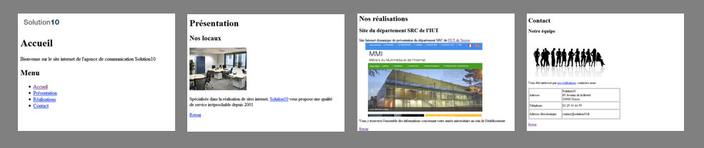

TP1 Initiation au HTML
1 - Une première page en HTML
Le document html de base se présente ainsi :

Le code associé en HTML 5 :

Exercice 1 : création de votre première page html
Préparez votre espace de travail en créant un dossier "public_html_local" dans lequel vous allez créer un sous-dossier "exercice1".En vous aidant de l'exemple ci-dessus, prenez un éditeur de texte (textEdit, bloc note, notePad...) et créer votre propre document html. Ajoutez une balise <p> ..... </p> avec le texte de votre choix.
Méthode :
- Enregistrez votre document sous le nom de "mapage.html". Attention à bien renseigner l'extension en .html et non en .txt
- Tapez le code html en respectant bien l'écriture des balises.
- Visualisez le résultat dans votre navigateur Internet (Internet Explorer, Firefox, Safari...)
2 - Le texte
Tout le texte contenu sur votre page se trouvera entre les balises<body> et </body>
Le texte tient une place importante dans un site Internet. Il est primordial de pouvoir l'utiliser et l'adapter de façon optimale.
Les balises titres
Elles permettent de bien structurer votre page mais aussi d'optimiser le futur référencement de votre site Internet. les différentes balises se présentent de cette manière :
Exercice 2 : les titres
Dans le dossier "public_html_local", vous allez créer un nouveau sous-dossier que vous nommerez "exercice2".En vous basant sur l'exercice 1, vous créerez 4 pages html que vous nommerez :
- index.html
- presentation.html
- realisation.html
- contact.html
Pour chacune des pages, vous organiserez le contenu de cette manière
en exploitant les balises h1 et h2 pour les titres et les sous-titres
:
Exercice 3 : Formatage de texte
Reprenez les pages html de l'exercice 2 et modifier les titres et les
textes en y insérant des balises des mises en forme (testez les mises
en forme proposées ci-dessous).
Pensez à enregistrer régulièrement votre travail. Visualisez le
résultat dans votre navigateur.
La mise en forme
Il est très simple de modifier la forme du texte en encadrant des mots
ou phrases par des balises.
En voici quelques-unes :
<i> </i>Italique<sub> </sub>Indice-
<sup> </sup>Exposant
- ...
Plus d'information sur les balises : https://jaetheme.com/balises-html5/
3 - Les images
Vous allez ajouter aux pages du contenu visuel.
Exercice 3 : Ajout d'images
Vous allez reprendre les pages précédentes afin d'y intégrer une image sur chaque.

Méthode :
- Créez un dossier "images" dans votre sous-dossier "exercice2".
- Enregistrez les images ci-dessous dans le dossier "images"
- Dans chaque page, insérez la balise <img /> en pointant la source vers l'image correspondante.
- Enregistrez et visionnez le résultat dans votre navigateur Internet
- Passez votre page au validateur W3C.
- Si il y en a, corriger les erreurs en vous aidant des recommandations du validateur W3C.
Logo pour page d'index

Photo des bureaux pour la page de présentation
Copie d'écran d'une réalisation

Visuel pour la page Contact
4 - Les liens
Vous allez maintenant lier vos pages afin de pouvoir naviguer entre elles.exercice 4 : les liens
- La page "index.html" servira de page de regroupement.Dans cette page, ajouter un menu pointant vers chacunes des pages du site.
Vous nommerez les titres du menu du même nom que leurs pages correspondantes (Présentation, Réalisations, Contact)
- Sur la page "presentation.html", vous insérerez un lien sur le mot Solution10' vers le page "contact".
- Sur la page "realisation.html", vous insérerez un lien vers le site du département MMI de l'IUT de Troyes (http://mmi.iut-troyes.univ-reims.fr).
- Sur la page Contact, vous insérerez un lien vers le page "realisation.html" sur le texte 'nos réalisations'
- Sur chaque page, vous ajouterez un bouton retour, redirigeant le visiteur vers la page d'index du site.
Méthode :
- Ouvrez vos pages html.
- Insérez les balises de liens sur les mots concernés.
- Enregistrez et visionnez le résultat dans votre navigateur Internet
- Passez votre page au validateur w3c.
- Si il y en a, corrigez les erreurs en vous aidant des recommandations du validateur.
5 - Les listes
Afin de mieux organiser notre menu présent en page d'accueil, vous allez organiser les liens vers les pages en liste.Exercice 5 : Ajouter une liste au menu
Vous allez donc reprendre votre page index.html dans laquelle se trouve votre menu, et lui appliquer une liste afin d'optenir le résultat suivant :
- Accueil
- Présentation
- Réalisations
- Contact
6 - Les Tableaux
Vous allez utiliser les tableaux pour la page "contact.html".Exercice 6: Les tableaux
Adapter votre page de contact afin d'y insérer le tableau suivant :

N'oubliez pas de passer votre page au validateur w3c.
8 - Pour aller plus loin...
Si il vous reste un peu de temps, améliorez le rendu des pages du site
de l'entreprise Solution 10 en exploitant une feuille de styles.
Vos efforts porteront sur la typographie, les couleurs et la
disposition des éléments sur la page.
9 - Annexe
Texte page Présentation :
Spécialisée dans la réalisation de sites internet, Solution10 vous
propose une qualité de service irréprochable depuis 2001.
Texte page Nos réalisations :
Site Internet dynamique de présentation du département MMI de l'IUT de
Troyes.
Vous y trouverez l'ensemble des informations concernant votre année
universitaire au sein de l'établissement
Texte page Contact :
Vous êtês intéressé par nos réalisations, Contactez-nous : Adresse
Solution10, 65 Avenue de la liberté 10000 Troyes
Téléphone : 0325334455, Email : contact@at-solution10.fr

- Faite valider votre page sur le site du W3C https://validator.w3.org/